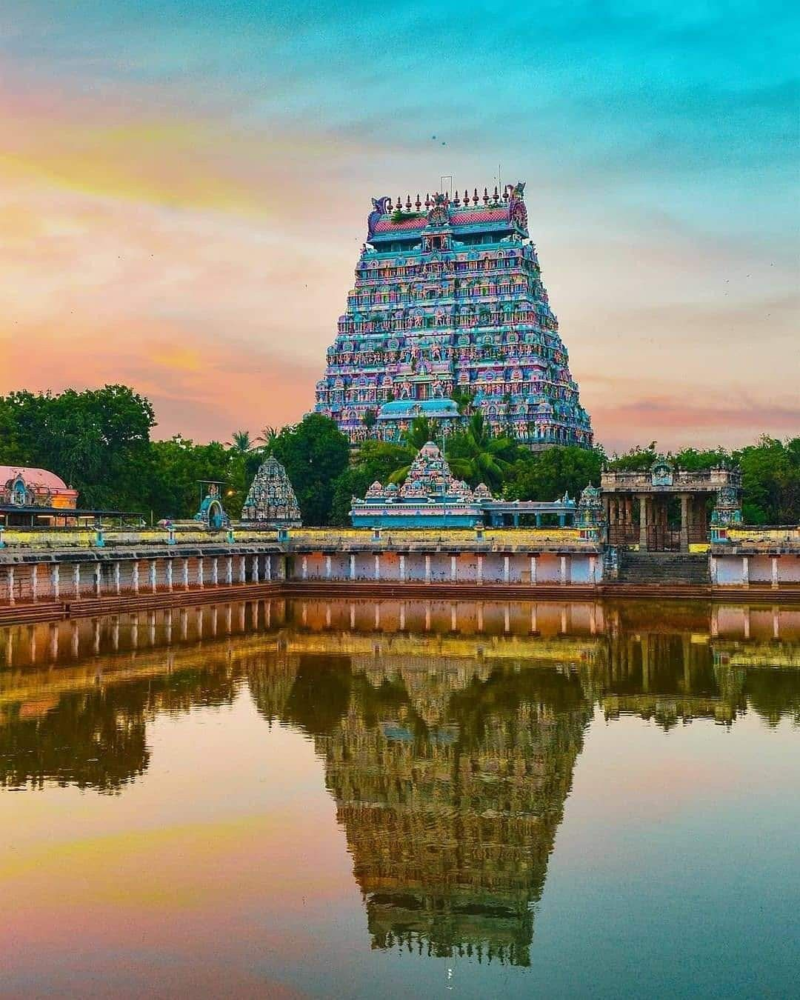
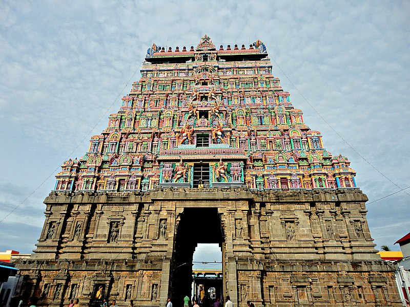
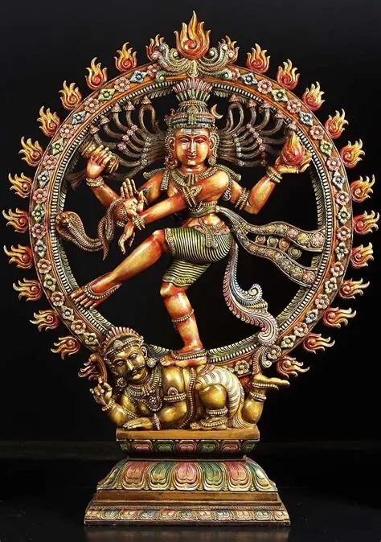
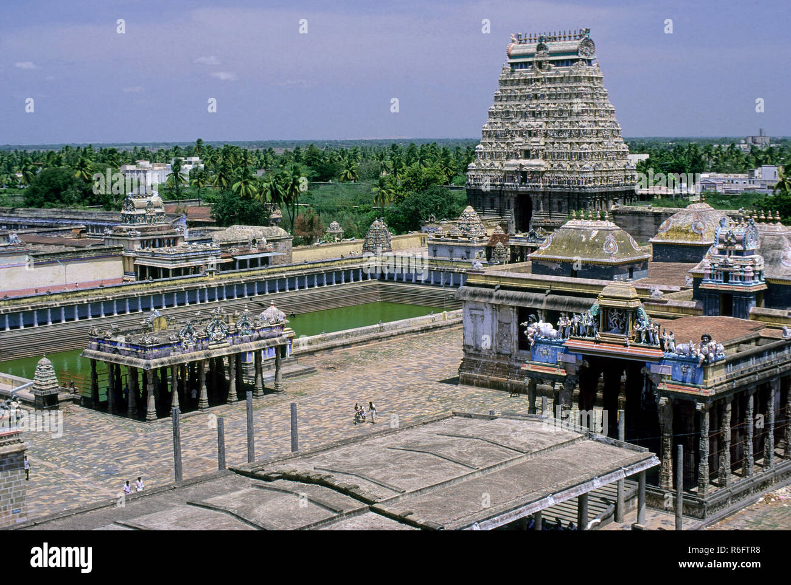

Chidambaram Nataraja Temple
The Temple of Cosmic Space and Dance
Overview
The Chidambaram Nataraja Temple, situated in the town of Chidambaram in Tamil Nadu, is one of the holiest and most philosophically significant temples in India. Dedicated to Lord Shiva as Nataraja, the Cosmic Dancer, this temple represents the divine rhythm that governs the universe. Unlike conventional Shiva temples, Chidambaram emphasizes the formless nature of God, making it a center of deep spiritual wisdom and metaphysical thought.
Sthala Purana
According to ancient legends, this sacred place was once a forest of Tillai tree where sages Patanjali and Vyaghrapada performed intense penance. Pleased with their devotion, Lord Shiva manifested here and performed the Ananda Tandava, the Dance of Bliss. The temple derives its name from “Chit” meaning consciousness and “Ambalam” meaning hall, symbolizing the hall of supreme consciousness.
Moolavar
The presiding deity is Lord Nataraja, a form of Lord Shiva performing the cosmic dance. He is accompanied by Goddess Sivakamasundari. The raised foot of Nataraja signifies liberation, while the fire in his hand represents destruction of ignorance. This form conveys profound spiritual truths through symbolic posture.
Temple Timings
The temple remains open daily for devotees to seek blessings during
various poojas and rituals conducted throughout the day. Morning
darshan begins at 5:00 AM and continues until 12:30 PM, followed by
evening darshan from 4:00 PM to 10:00 PM. These timings may vary on
festival days and special occasions, when the temple remains open
for extended hours.
Morning: 5:00 AM – 12:30 PM
Evening: 4:00 PM – 10:00 PM
Chidambaram Rahasyam (Temple Secret)
One of the most unique aspects of this temple is the Chidambaram Rahasyam. Behind a curtain in the sanctum lies empty space, representing Akasha (ether). This signifies that the ultimate reality is formless and omnipresent. This concept aligns astonishingly with modern scientific understanding of space.
Pancha Bhoota Sthalam
The temple architecture is filled with sacred symbolism. The golden roof of the Chit Sabha has 21,600 gold tiles symbolizing the number of breaths a human takes in a day. The five silver steps represent the Panchakshara mantra “Na Ma Shi Va Ya”. The entire structure reflects yogic and cosmic principles embedded in stone.
Architecture and Symbolism
The temple architecture is filled with sacred symbolism. The golden roof of the Chit Sabha has 21,600 gold tiles symbolizing the number of breaths a human takes in a day. The five silver steps represent the Panchakshara mantra “Na Ma Shi Va Ya”. The entire structure reflects yogic and cosmic principles embedded in stone.
Festivals and Rituals
The most important festival celebrated here is the Arudra Darshan, marking the cosmic dance of Lord Shiva. Other major festivals include Maha Shivaratri, Aani Thirumanjanam, and Margazhi Thiruvathirai. Daily rituals are conducted with utmost precision following ancient Agamic traditions.
Spiritual Significance
Chidambaram is not merely a temple but a spiritual university that teaches the unity of science, art, philosophy, and devotion. The temple conveys the idea that the human heart is the true Chidambaram where divine consciousness eternally dances.
Unique Features of Chidambaram Temple
The temple consists of five sabhas — Chit Sabha, Kanaka Sabha, Deva Sabha, Raja Sabha, and Nritta Sabha. Each sabha represents a cosmic principle. The Chit Sabha, where Nataraja resides, represents pure consciousness and is accessible only to priests during rituals.This is the only temple where Shiva is worshipped as space itself.The alignment of dance poses with Bharatanatyam, the scientific symbolism of breath and mantra, and the concept of formless divinity make this temple unmatched in spiritual depth and universal relevance.
Temple Gallery




Darshan & Special Poojas
Chidambaram Nataraja Temple is a sacred shrine where Lord Shiva is worshipped as Nataraja, the cosmic dancer. The temple is famous for the Chidambara Rahasya Darshan, symbolizing the worship of space (Akasha) rather than a physical idol. Arudra Darshan, celebrated during the Tamil month of Margazhi, is the most important festival and highlights Shiva’s cosmic dance. The temple offers free darshan to devotees, with special darshan arrangements during festivals and peak days. All rituals are performed by Dikshitar priests following ancient Vedic traditions.
Official Information & Contact
For official updates, darshan details, and announcements, devotees may visit the official website of the Meenakshi Amman Temple.
🌐 Official Website:
https://www.chidambaramnataraja.org
📞 Temple Contact:
+91 4144 222 226
📧 Email:
chidambaramtemple@gmail.com
Temple Location
Chidambaram Nataraja Temple is located in the town of Chidambaram in Cuddalore district, Tamil Nadu. It lies about 250 km south of Chennai and is well connected by road and rail to major cities in the state.
📍 Get Directions to Temple